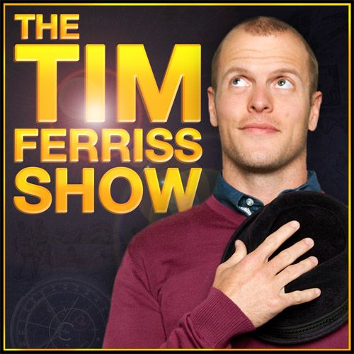

Each episode, Tim deconstructs world-class performers from eclectic areas (investing, sports, business, art, etc.) to extract the tactics and tools people can use.
Each episode, Tim deconstructs world-class performers from eclectic areas (investing, sports, business, art, etc.) to extract the tactics and tools people can use.
The Champs is a comedy podcast hosted by Neal Brennan, Moshe Kasher, and until 2013 DJ Douggpound (Doug Lussenhop of the Tim and Eric Show). It is part of the All Things Comedy podcast network.
StarTalk is a podcast on space, science, and popular culture hosted by astrophysicist Neil deGrasse Tyson, with various comic and celebrity co-hosts and frequent guests from the worlds of science and entertainment.
Left, Right, & Center is a weekly half-hour public radio program that provides a "civilized yet provocative antidote to the screaming talking heads that dominate political debate."
Hound Tall Discussion Series is a live monthly podcast that covers a single topic. It's "an hour long chat with an expert and a panel of comedians, they learn all there is to know about things".
Fresh Air is an American radio talk show broadcast on National Public Radio stations across the United States since 1987.

The program primarily consists of interviews with comedians and comedy writers, as well as others in the entertainment and radio communities.
The show focuses on topics of a scientific and philosophical nature. The show attempts to approach broad, difficult topics such as "time" and "morality" in an accessible and light-hearted manner and with a distinctive audio production style.